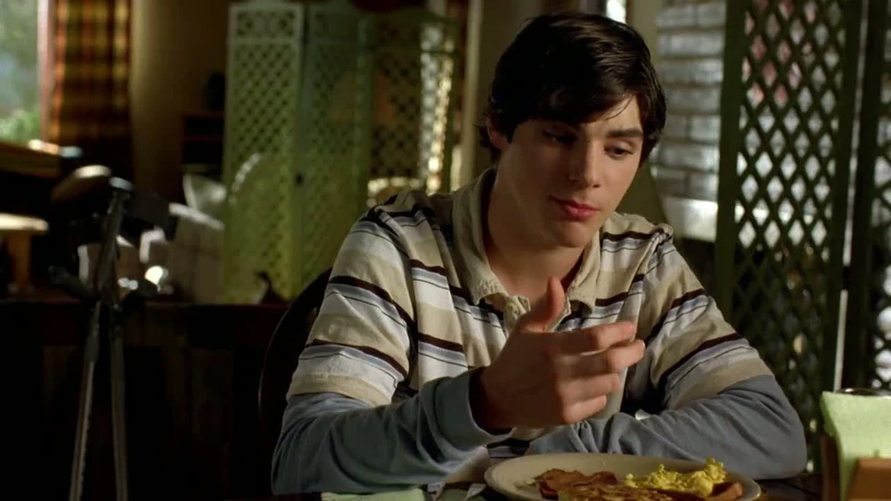
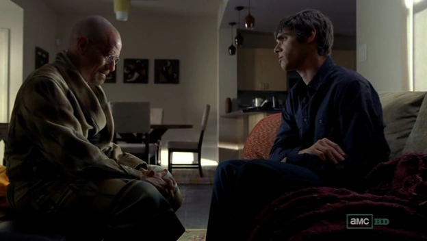
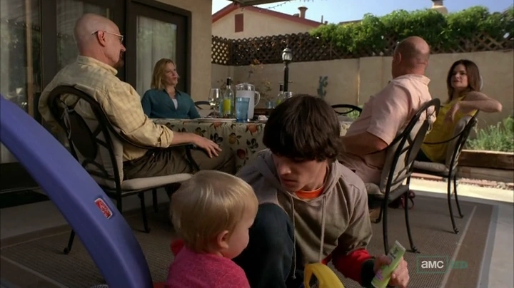
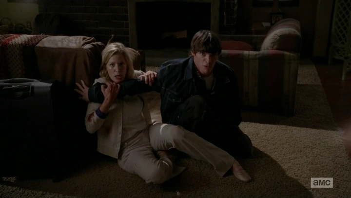

Walter White Jr.

Walter White Jr., también conocido como "Flynn", es el hijo adolescente de Walter y Skyler White en *Breaking Bad*, interpretado por RJ Mitte. A lo largo de la serie, Walter Jr. representa la inocencia y la normalidad que su familia pierde debido a las actividades ilegales de su padre. Es un personaje que, aunque no está involucrado en el mundo del crimen, sufre profundamente las consecuencias de las decisiones de Walter y la desintegración de su familia.
 Personalidad y Vida FamiliarWalter Jr. nació con parálisis cerebral, lo que afecta su habla y su movilidad. A pesar de esta condición, Walter Jr. lleva una vida relativamente normal y muestra una gran independencia y resiliencia. Es un joven optimista, amable y con una personalidad afectuosa. Su relación con sus padres, especialmente con su padre, es cercana al inicio de la serie. Walter Jr. admira a Walter y aprecia sus esfuerzos para cuidar de la familia, sin sospechar las actividades criminales en las que su padre está involucrado. Walter Jr. tiene una relación particularmente estrecha con Skyler, quien es protectora y dedicada a su bienestar. Sin embargo, su relación con Walter se va complicando a medida que la personalidad de su padre cambia y se vuelve más errática. Flynn intenta comprender el comportamiento extraño de su padre y apoyar a su familia en tiempos difíciles, pero es inevitablemente afectado por la tensión y el conflicto que se desarrollan en su hogar.
Cambio de Dinámica: La Enfermedad de WalterCuando Walter es diagnosticado con cáncer de pulmón, Walter Jr. es devastado por la noticia y muestra una gran preocupación por la salud de su padre. Esto intensifica su admiración hacia él, y trata de demostrar su apoyo incondicional, aunque los efectos del tratamiento y la doble vida de Walter cambian su dinámica familiar. Flynn permanece al lado de su padre y siente orgullo cuando cree que su familia se está uniendo para enfrentar la enfermedad de Walter. A lo largo de este tiempo, Walter Jr. también adopta el alias de "Flynn", que usa como una forma de autoafirmación y para escapar de la situación tensa y caótica de su vida familiar. El nombre “Flynn” representa un deseo de individualidad, pero también de distanciamiento de la imagen de su padre, quien cada vez se convierte en una figura más desconcertante y lejana.
 Las Mentiras y el Deterioro de la FamiliaCon el paso del tiempo, Walter Jr. comienza a notar cambios en su hogar y en la personalidad de su padre. Sin embargo, sus padres tratan de mantenerlo ajeno a las actividades de Walter y a las razones detrás de los conflictos familiares. Walter Jr. percibe que su madre se vuelve cada vez más distante y tensa, y a menudo es testigo de las discusiones entre sus padres, lo cual le genera gran confusión. Durante este período, Walter Jr. sigue defendiendo a su padre y se niega a ver a Walter de manera negativa, creyendo en las explicaciones superficiales que le ofrecen sobre los cambios en su hogar. Sin conocer la verdad, idealiza a su padre y valora sus aparentes sacrificios, sintiéndose agradecido cuando Walter afirma que todo lo que hace es por el bienestar de la familia. Flynn no sospecha la verdad sobre el negocio de metanfetaminas y no entiende completamente el peso de las mentiras que están deteriorando la estructura familiar.
 Desilusión y Descubrimiento de la VerdadLa historia de Walter Jr. toma un giro dramático hacia el final de la serie, cuando descubre la verdad sobre su padre. A medida que la vida criminal de Walter se vuelve insostenible, Walter Jr. se da cuenta de la verdadera razón detrás del comportamiento de su padre y de la tensión en su hogar. La revelación de que su padre es el narcotraficante conocido como "Heisenberg" destroza a Flynn y lo llena de rabia y decepción. Walter Jr. rechaza a Walter completamente y pierde toda la admiración y amor que alguna vez sintió por él. En uno de los momentos más tensos, cuando Walter regresa al hogar en un intento de llevarse a su familia, Walter Jr. defiende a su madre y se enfrenta a su padre, amenazando con llamar a la policía. Esta confrontación simboliza el punto de ruptura definitivo en la relación entre padre e hijo, ya que Walter Jr. elige proteger a su madre y rechaza a su padre por el daño que ha causado.
Consecuencias y Vida Después de la Caída de WalterTras la caída del imperio de Walter y la muerte de Hank, Walter Jr. queda emocionalmente devastado. Él y su madre enfrentan el desprecio de la sociedad, ya que la comunidad ahora ve a Walter como un criminal peligroso y sus acciones afectan la vida de toda la familia White. Skyler y Walter Jr. viven en un estado de aislamiento y vergüenza, intentando reconstruir sus vidas mientras lidian con el trauma y las repercusiones legales de las actividades de Walter. En sus últimos intentos de redención, Walter deja dinero para su hijo, aunque Flynn nunca llega a reconciliarse con él. Flynn rechaza cualquier intento de contacto de su padre y deja claro que no quiere saber nada de él ni de su dinero. La historia de Walter Jr. termina con él tratando de llevar una vida normal, aunque las cicatrices emocionales y el resentimiento hacia su padre son evidentes.
 El Legado de Walter White Jr.Walter White Jr., o Flynn, es un personaje que representa la pérdida de inocencia y la destrucción que el mundo del crimen causa en las familias. A pesar de su amor y lealtad hacia su padre, su historia se convierte en una tragedia cuando descubre la verdadera identidad de Walter y debe enfrentarse al impacto de sus acciones. A diferencia de Walter, quien abraza la oscuridad de su vida criminal, Flynn mantiene su moral y rechaza cualquier conexión con el mundo de su padre, mostrando una fortaleza que lo define hasta el final. El legado de Walter Jr. es el de un joven que pierde a su padre y su vida familiar a causa de la ambición y el poder. Su historia en *Breaking Bad* simboliza el precio que pagan los inocentes y la destrucción emocional que las decisiones criminales de un ser querido pueden causar en los que no tienen culpa.